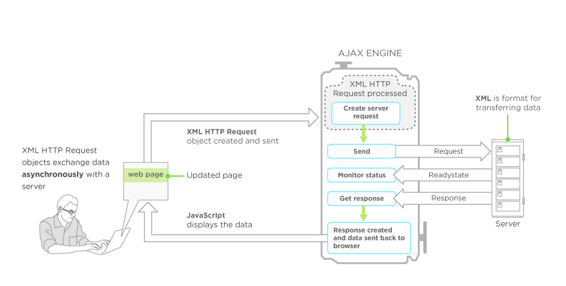

AJAX / SPA
presentation
Created by Rinat Gaynulin
Что же такое AJAX?
AJAX – это акроним, раскрывающийся как Asynchronous JavaScript And XML и означающий асинхронный JavaScript и XML. AJAX – это технология, включающая сценарии JavaScript в документе HTML, которые по мере необходимости в фоновом режиме выполняют запросы к серверу (серверным сценарием на каком либо языке web-программирования), и получают необходимые данные, обновляя отдельные части документа и тем самым исключая необходимость его повторной загрузки или загрузки другого документа.
Классическая модель веб-приложения:
- Пользователь заходит на веб-страницу и нажимает на какой-нибудь её элемент
- Браузер формирует и отправляет запрос серверу
- В ответ сервер генерирует совершенно новую веб-страницу и отправляет её браузеру и т. д., после чего браузер полностью перезагружает всю страницу

При использовании AJAX:
- Пользователь заходит на веб-страницу и нажимает на какой-нибудь её элемент
- Скрипт (на языке Javascript) определяет, какая информация необходима для обновления страницы
- Браузер отправляет соответствующий запрос на сервер
- Сервер возвращает только ту часть документа, на которую пришёл запрос
- Скрипт вносит изменения с учётом полученной информации

Преимущества использования AJAX:
- Экономия трафика. Передаются данные только конкретной части страницы, что существенно снижает трафик
- Уменьшение нагрузки на сервер. Нет надобности обновлять страницу целиком, уходит конкретный запрос.
- Быстрая работа самого сервиса. Поскольку работа происходит с конкретным блоком, то и результат его работы можно увидеть намного быстрее.
- Простота проекта. AJAX часто используют для работы с программным кодом и с большой масштабностью проекта.
- Разнообразие в использовании. Действие AJAX подразумевает под собой не только работу с формами. Например, в поиске Google вы можете видеть подборку поисковых фраз после ввода уже первых букв Вашего запроса.
В состав AJAX входят следующие компоненты:
- JavaScript – основной ингредиент AJAX, реализующий функциональность на стороне клиента. В функциях JavaScript для манипулирования отдельными частями документа задействуется объектная модель документа (DOM). JavaScript – основной ингредиент AJAX, реализующий функциональность на стороне клиента. В функциях JavaScript для манипулирования отдельными частями документа задействуется объектная модель документа (DOM).
- Объект XMLHttpRequest (встроенный в браузер) позволяет из JavaScript организовать асинхронный доступ к серверу, благодаря чему пользователь имеет возможность продолжать работу с документом, в то время как она выполняет некоторые действия. Под доступом к серверу подразумеваются простые запросы HTTP на выполнение сценариев, размещенный на сервере.
- Серверные сценарии, необходимые для обслуживания запросов поступающих из JavaScript со стороны клиента. Эти сценарии, как правило, возвращают результаты своей работы в формате XML. Серверные сценарии, необходимые для обслуживания запросов поступающих из JavaScript со стороны клиента.
Обмен данными
Пример кода
// 1. Создаём новый объект XMLHttpRequest
var xhr = new XMLHttpRequest();
// 2. Конфигурируем его: GET-запрос на URL 'phones.json'
xhr.open('GET', 'phones.json', false);
// 3. Отсылаем запрос
xhr.send();
// 4. Если код ответа сервера не 200, то это ошибка
if (xhr.status != 200) {
// обработать ошибку
alert( xhr.status + ': ' + xhr.statusText ); // пример вывода: 404: Not Found
} else {
// вывести результат
alert( xhr.responseText ); // responseText -- текст ответа.
}
Для того, чтобы осушествлять обмен данными, на странице должен быть создан обьект XMLHttpRequest, который является своеобразным посредником между браузером пользователя и сервером. С помощью XMLHttpRequest можно отправить запрос на сервер, а также получить ответ в виде различного рода данных.
Методы объекта XMLHttpRequest
- abort() — отмена текущего запроса к серверу.
- getAllResponseHeaders() — получить все заголовки ответа от сервера.
- getResponseHeader(«имя_заголовка») — получить указаный заголовок.
- open(«тип_запроса»,«URL»,«асинхронный»,«имя_пользователя»,«пароль») — инициализация запроса к серверу, указание метода запроса. Тип запроса и URL — обязательные параметры. Третий аргумент — булево значение. Обычно всегда указывается true или не указывается вообще (по умолчанию — true). Четвертый и пятый аргументы используются для аутентификации (это очень небезопасно, хранить данные об аутентификации в скрипте, так как скрипт может посмотреть любой пользователь).
- send(«содержимое») — послать HTTP запрос на сервер и получить ответ.
- setRequestHeader(«имя_заголовка»,«значение») — установить значения заголовка запроса.
Свойства объекта XMLHttpRequest
- onreadystatechange — одно из самых главных свойств объекта XMLHttpRequest. С помощью этого свойства задаётся обработчик, который вызывается всякий раз при смене статуса объекта.
- readyState — число, обозначающее статус объекта.
- responseText — представление ответа сервера в виде обычного текста (строки).
- responseXML — объект документа, совместимый с DOM, полученного от сервера.
- status — состояние ответа от сервера.
- statusText — текстовое представление состояния ответа от сервера.
Cвойство readyState:
- 0 — Объект не инициализирован.
- 1 — Объект загружает данные.
- 2 — Объект загрузил свои данные.
- 3 — Объек не полностью загружен, но может взаимодействовать с пользователем.
- 4 — Объект полностью инициализирован; получен ответ от сервера.
P.S. Именно опираясь на состояние готовности объекта можно представить посетителю информацию о том, на какой стадии находится процесс обмена данными с сервером и, возможно, оповестить его об этом визуально.
Пример кусочка кода из реального проекта
Пример ответа сервера
Что же такое SPA и как оно сзязано с AJAX?
Одностраничное приложение (англ. single page application, SPA) — это веб-приложение или веб-сайт, использующий единственный HTML-документ как оболочку для всех веб-страниц и организующий взаимодействие с пользователем через динамически подгружаемые HTML, CSS, JavaScript, обычно посредством AJAX.